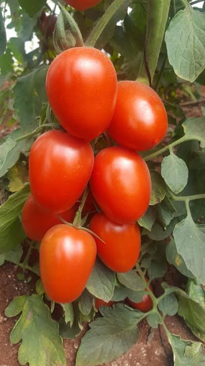

How to Farm Tomatoes

Tomato farming has been a money spinner for ages due to the fact that almost everybody eats the vegetable. From Nigeria to Ghana, The United Kingdom to Japan, Ondo to Zaria, Aba to Lokoja and Lagos to Abuja, tomato is a produce that can turn you to a millionaire in no time if you follow all the necessary protocols while farming it.
In Nigeria, tomato farming is predominantly done in the northern part of the country. Most states in the north like Kano, Jigawa, Plateau, Benue, Kaduna, Gombe, Bauchi, Sokoto, Kebbi, Nasarawa, Zamfara and Kogi have huge tomato plantations. Tomato farming is also done in the southern part of Nigeria. Today, a lot of people even cultivate tomato in Lagos state using Greenhouses.
It is a fact that over 80% of tomato farmers in Nigeria still cultivate tomatoes in the old and outdated ways. This has made the average yield of tomatoes in Nigeria to be about 2 tonnes while in countries like Netherland and Israel, yields of tomato can be up to 100 tonnes per hectare. Those using greenhouses in Netherland and some other countries have achieved yields of up to 400 tonnes per hectare of tomato.
Most of the harvested fresh tomatoes in Nigeria also rot away because of lack of storage facilities. Nigeria hardly processes its fresh tomatoes to paste; however, things are gradually changing with the advent of Dangote Tomato paste plant in Kano. Other tomato paste plants like Tomato Jos are also springing up.

Steps to take to be successful in tomato farming
The interest in farming in the last 5 years increased tremendously due to the lull in crude oil market and the aggressive agriculture focused campaign of the government. The rate of youth unemployment has also lured a lot of young people to farming.
It is advisable you undergo training in tomato farming before you start your farm. You may decide to attend reputable agricultural institute for training, please avoid attending institutes that will teach you only the theoretical aspect of farming.
Undergoing internship in a good tomato farm is also not a bad idea. Look around for tomato farms with a good operational set-up, approach them and ask that you want to understudy their operations. Some farms may ask you to pay for them to train you.
Farm Location
Since you are done with training. Now is the time to get a location for your farm. Do you want to farm in the southern or northern part of Nigeria? Do you want to do urban farming or rural farming? All these options have their own merits and demerits.
Getting a farmland with a flat topography is good, also make sure that the road leading to your farm is good, this will help in seamless evacuation of your produce.
Farmland can be rented or leased; you may also acquire the farmland. You should consider your cash outflow when you want to decide either to buy or lease.
Recruitment of staff
You need to employ people who are skilled in farming. Poaching staff from existing farm is not a bad idea; also you may ask agricultural training institutes to recommend people to you for employment.You should be very careful in recruiting uneducated farm hands, they have poor attitude to work and their attrition rate is quite high.
Water and Power
If your farmland does not have a ready source of water, you may need to drill a borehole or well, you can also create a mini reservoir to harvest and store rain water. Rain fed farming is outdated, you need to farm all year round, with a functional source of water, you can farm tomatoes all year round. Year round farming with smart technologies like drip irrigation.
Soil and Water Analysis
Going to farm without doing the complete analysis of the soil and water is like going to an exam hall without anything in your brain. A good soil test will show you the levels of nutrients in the soil, pH of the soil and the microbial count in the soil. Some soil tests can show you if the soil is infected with diseases like bacterial wilt. Bacterial wilt can wreck your tomato farm within days.
The result of the soil test will point you to the type of fertiliser or manure to apply to your soil to get good yield. If your soil has diseases or pest like nematode, you will need to apply the necessary solution to these problems. Water test will show you the pH of the water and the nutrients like calcium in the water.
Seed selection
Planting untreated seeds can introduce harmful microbes to your soil and cause a whole lot of problems. Some types of soil infections can persist for years.
You must insist on buying good seeds from reputable sellers. Do you want to plant open pollinated seeds or hybrid seeds? Hybrid seeds in most cases have better yields and disease tolerances.
You also need to plant the type of tomatoes eaten in Nigeria. Planting varieties of tomatoes not favoured in Nigeria may lead to rejection at the point of sales.
Seeds with tolerances to diseases prevalent in your location should be planted. Some seeds are also better in different season. You must take note of all these facts.
There are many tomatoe varieties, broadly categorized into:
Cherry tomatoes, such as Sun Gold, Napa Grape and Pear Drops, have the quintessential sweet-tart tomato flavor and are great for salads and snacking on whole. Because the fruit is small, these are the first to mature.
Sauce tomatoes, such as Roma, Amish Paste and Big Mama, have a richer flavor and much lower water content than other varieties. They’re the best ones for spaghetti sauce.
Beefsteak tomatoes, such as Mortgage Lifter, Cherokee Purple and Brandywine, have the biggest fruit and the greatest range of flavor and form. They are commonly sliced for sandwiches or making caprese salad, though the best varieties can be eaten like an apple.
Sauce tomatoes (Roma) is most popular in Nigeria Markets. Roma specie is very unique because of it’s long shelf life, it’s hard back, and low water content which enables it to last longer after harvest. A paint rubber of the seed cost about N4,500-N6,500
Drip Irrigation
Drip irrigation remains the best type of irrigation for tomato farming. Tomato plants do not like water on their leaves; this may increase the chances of getting foliar infections that may ruin the plants.
Drip irrigation is the controlled passing of water to the roots of plants. Drip irrigation lines are tubes or pipes with emitters, the emitters pass water to plants in a trickle form. Some emitters can emit 1-8 litres of water per hour depending on the type you buy.
Drip irrigation can save up to 80% water as compared to flood irrigation. It can be used to pass fertiliser and chemicals to plants, with drip irrigation, 30% of fertiliser can be saved.
Drip irrigation has shown to increase yield by up to 30%, in some cases up to 200% if combined with fertigation and chemigation.
The veins are like the roots of the plants. Plants use water more efficiently through their veins than when you pour water on their leaves. Pouring water on the leaves of the plants also encourages fungal diseases and insects infestation.
Labour efficiency using drip irrigation is great. Imagine that you have to side dress urea fertiliser to your one hectare of tomato plants; you will need several labourers to do this with the attendant cost. With drip irrigation and venture injector, you can mix the urea fertiliser in water and pass it through the drip irrigation system. The system drops the fertiliser to the base of every tomato plant. This is just plug and play.
The excuse that drip irrigation is expensive is unfounded; you can now get cheap drip irrigation system in Nigeria. Using drip irrigation is very beneficial and if you cultivate your tomatoes in the right way, you can recoup the cost of your drip irrigation system within a season.